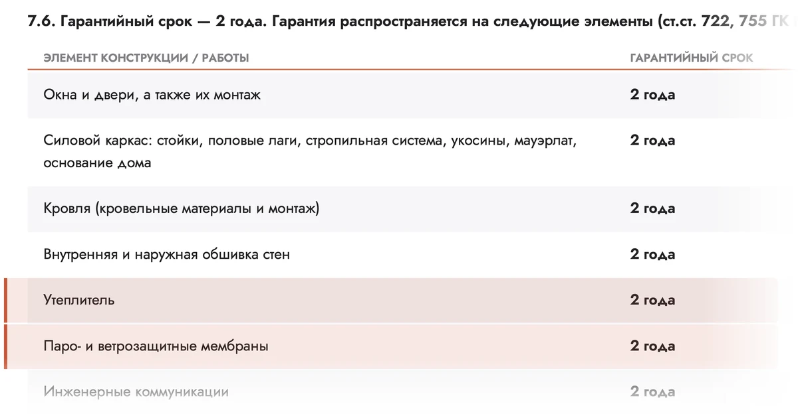

Возражение «Каркасный дом — картон, зимой холодно»: 10 шапок
Каждая шапка отвечает фактом: толщины и марки из таблицы комплектаций, пункт 7.6 договора, ролики со стройки и отзывы с главной. Про тепло — только «Комфорт» и «Премиум»: в «Холодном контуре» утепления нет.
Советую: 02 — разрез стены против «картона» — сразу видно, что внутри; 03 — утеплитель и мембраны в гарантии, настоящий фрагмент договора; 08 — честная таблица: где утеплитель есть, а где его нет.
Вопрос клиента — ответ из таблицы
- Идея
- Шапка начинается с вопроса, который человек задаёт себе сам, а отвечает тремя строками из таблицы комплектаций. Справа — дом зимой.
- Почему продаёт
- Человек узнаёт свой страх и сразу видит конкретику: миллиметры, марку плит, три стекла. Цифры убеждают сильнее слов «тёплый» и «надёжный».
- Риск
- Большое фото дома зимой лежит в папке сайта, но на живой главной его нет — уточнить, чей это дом. Вопрос — не отзыв, подписи клиента у него нет.
«Каркасный — это же картон. Зимой не замёрзнем?»
В стене «Комфорта» — 150 мм базальтовых плит
Разрез стены против «картона»
- Идея
- Слева — как представляют каркасный дом: одна тонкая стенка. Справа на оранжевом — стена «Комфорта» по слоям, изнутри наружу.
- Почему продаёт
- Картинка разбивает образ «картона» за секунду: слоёв шесть, у каждого есть строка в таблице. Такой разрез легко повторить менеджеру в разговоре.
- Риск
- Порядок слоёв — по технологии каркасной стены: в таблице они разложены по разделам, а не по порядку. Сверить с инженером.
Каркасный — не значит картонный
Стена «Комфорта» — шесть слоёв, и у каждого есть строка в таблице «Цены и комплектации».
- Вагонка премиум, АБ классСтены и потолок внутри
- Пароизоляция — плёнка 200 микронСтыки проклеены скотчем Технониколь Альфа или аналогом
- Базальтовые плиты Технониколь, 150 ммМежду стойками каркаса 145×45 мм из сухой доски
- Ветрозащита Izobox премиум, ТехноникольСтены и пол
- Вентиляционный зазорКонтробрешётка 40×40 мм
- Имитация бруса АБ классаФасад
В «Холодном контуре» утеплителя, пароизоляции и вагонки нет.
Утеплитель в пункте договора
- Идея
- Настоящий фрагмент договора: в таблице п. 7.6 подсвечены строки «Утеплитель» и «Паро- и ветрозащитные мембраны». Рядом — круглая печать «гарантия 2 года».
- Почему продаёт
- Страх «сделают кое-как, а внутри не видно» снимается документом: утеплитель и плёнки — элементы под гарантией, а не слова на сайте. Договор можно скачать.
- Риск
- В черновике teksty-pochemu-my.md список п. 7.6 короче — без утеплителя, окон и кровли, а в PDF договора эти строки есть. Выровнять тексты. Только «гарантия 2 года».
Утеплитель и мембраны — в гарантии договора
Гарантия 2 года на утеплитель, паро- и ветрозащитные мембраны. Какой утеплитель и сколько — строкой в смете, а смета входит в договор.

Миллиметры крупно
- Идея
- Весь экран оранжевый, три огромные белые цифры: 150 мм, 200 мм, 3 стекла. Справа — снимок сданного дома зимой в белой рамке.
- Почему продаёт
- Цифры читаются за две секунды и остаются в памяти. Заголовок предлагает сравнивать миллиметры, а не слова — вызов звучит уверенно.
- Риск
- Белый на оранжевом — 4,9 : 1, мелкий текст не меньше 17 px. Фото без подписи: нельзя подавать его как дом в «Комфорте» — комплектация того дома неизвестна.
Сравнивайте миллиметры, а не обещания
Путь стены: от проекта до технадзора
- Идея
- Сверху на синем — заголовок, ниже на белом пять шагов стройки. У первых трёх — обложки настоящих роликов со страниц «Как строим».
- Почему продаёт
- Образ «картона» уходит, когда видно, сколько работы внутри стены и кто её проверяет. Обложки роликов показывают, что шаги сняты на стройке.
- Риск
- Шаг «Утепление» верен только для «Комфорта» и «Премиума» — плитка это называет. Технадзор и чек-лист — со страницы «Как заказать», в договоре их нет.
От чертежа до утеплителя — пять шагов с проверкой
- Конструктивный проект
Инженер считает снеговые и ветровые нагрузки вашего региона
- Каркас из сухой доски
Камерная сушка, влажность 12–16 %
- Ветрозащита
Мембраны, нахлёсты, проклейка стыков
- 150 / 200 мм«Комфорт» / «Премиум»Утепление
Базальтовые плиты и пароизоляция 200 микрон
- Чек-листтретий этапТехнадзор и акт
Утепление проверяют по чек-листу, этап вы принимаете по акту
Ролики хозяев
- Идея
- Слева — приглашение посмотреть ролики хозяев, справа — четыре обложки с главной: два отзыва клиентов и два сданных дома, снятых зимой. Подписи — как на главной.
- Почему продаёт
- Живой человек у своего дома убеждает сильнее цифр, а снег на обложках без слов отвечает на «зимой холодно».
- Риск
- Только подписи и ролики с главной, цитат нет. «Стамбул» и «Объект 3» — видеообзоры сданных домов, а не отзывы: так и подписаны.
Хозяева сняли свои дома на видео — смотрите сами
Ролики снимали сами клиенты после сдачи дома. У сданных домов — видеообзор и фотографии с площадки.
Проверьте на стройке
- Идея
- Фото сданного дома зимой под плотным синим тоном, поверх — три белых «билета»: действующая стройка, офис с производством и право проверять работы по п. 5.5.
- Почему продаёт
- Приглашение приехать говорит об уверенности лучше слов. Билет с пунктом договора показывает: проверка — право клиента, а не любезность.
- Риск
- Для билета «Стройка» нужны даты и районы выездов — без них приглашение звучит общо. Белый на тонированном фото — не меньше 7,4 : 1.
Картон или нет — проверьте на стройке
Посмотрите сами, из чего и как собирают дом
Москва, ул. Адмирала Корнилова, 66, строение 20
ПН–ВС 11:00–18:00, по записиХод и качество работ вы вправе проверять в любое время
Договор — на сайтеЧестно: где утеплитель есть
- Идея
- Белая таблица трёх комплектаций по четырём строкам, которые отвечают на «холодно»: утепление, пароизоляция, окна, отопление. «Нет» стоит там, где его нет.
- Почему продаёт
- Честное «Нет» в «Холодном контуре» вызывает больше доверия, чем обещание тепла везде, и само подводит к «Комфорту».
- Риск
- Строка «Отопление и тёплый пол — нет» может отпугнуть, зато вопрос не всплывёт после договора. Решить владельцу, оставлять ли её в шапке.
Где утеплитель есть, а где его нет
«Холодный контур» — без утепления. Для жизни круглый год — «Комфорт» и «Премиум» с утеплением 150 и 200 мм.
Состав — из сметы компании. Полную смету на ваш дом пришлём до подписания договора.
Что уже в цене
- Идея
- Слева на синем — заголовок про окна с тремя стёклами, справа поверх фото — белый чек: что защищает от холода и ветра во всех трёх комплектациях.
- Почему продаёт
- Человек ждёт, что в самой простой комплектации будет голая коробка, а видит зимние окна, ветрозащиту и утеплённую дверь. Ожидание перекрыто — цена кажется честнее.
- Риск
- «Входит во все комплектации» не значит «дом тёплый»: утеплителя в «Холодном контуре» нет — это сказано в подзаголовке и в итоговой строке чека.
Окна с тремя стёклами — даже в «Холодном контуре»
А утеплитель 150 мм или 200 мм и пароизоляцию добавляют «Комфорт» и «Премиум».
- Окна ПВХ: три стекла, профиль 70 мм
- Монтаж окон на демисезонную пену
- Металлическая дверь толщиной 70 мм, утеплена пенополистиролом
- Ветрозащита стен и пола Izobox, Технониколь
- Сетка от грызунов и поперечное усиление пола
В «Комфорте» и «Премиуме» ещё утеплитель 150 мм или 200 мм и пароизоляция 200 микрон
Нынешний первый слайд, малая правка
- Идея
- Та же фотография, крупный заголовок с цветным хвостом и одна кнопка — как сейчас на главной. Меняются только слова: вместо «от 26 дней» — толщина утеплителя.
- Почему продаёт
- Главная почти не меняется, а первый экран сразу отвечает на «зимой холодно». Заодно уходят «от 26 дней» и «не меняется до сдачи»: в договоре срок и цена записаны с условиями.
- Риск
- Заголовок длиннее нынешнего, на телефоне — четыре строки. Толщины верны только для «Комфорта» и «Премиума» — подзаголовок это называет.
Каркасные дома под ключ с утеплением 150 или 200 мм
Базальтовые плиты Технониколь — в «Комфорте» и «Премиуме». Окна с тремя стёклами — в любой комплектации.